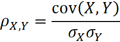
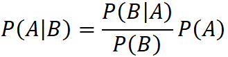

CFA Textbook
--------------------
Study Session 2 Quantitative Methods : Basic
Concepts
-------------------- --------------------
Reading 9 Probability Concepts
--------------------
Summary
- A random variable is a quantity whose outcome is uncertain.
- Probability is a number between 0 and 1 that describes the
chance that a stated event will occur.
- An event is a specified set of outcomes of a random variable.
- Mutually exclusive events can occur only one at a time.
Exhaustive events cover or contain all possible outcomes.
- The two defining properties of a probability are, first, that
0 ≤ P(E) ≤ 1 (where P(E) denotes the probability of an event E), and
second, that the sum of the probabilities of any set of mutually
exclusive and exhaustive events equals 1.
- A probability estimated from data as a relative frequency of
occurrence is an empirical probability. A probability drawing on
personal or subjective judgment is a subjective probability. A
probability obtained based on logical analysis is an a priori
probability.
- A probability of an event E, P(E), can be stated as odds for
E = P(E)/[1 − P(E)] or odds against E = [1 − P(E)]/P(E).
- Probabilities that are inconsistent create profit
opportunities, according to the Dutch Book Theorem.
- A probability of an event not conditioned on another event is
an unconditional probability. The unconditional probability of an
event A is denoted P(A). Unconditional probabilities are also called
marginal probabilities.
- A probability of an event given (conditioned on) another
event is a conditional probability. The probability of an event A
given an event B is denoted P(A | B).
- The probability of both A and B occurring is the joint
probability of A and B, denoted P(AB).
- P(A | B) = P(AB)/P(B), P(B) ≠ 0.
- The multiplication rule for probabilities is P(AB) = P(A |
B)P(B).
- The probability that A or B occurs, or both occur, is denoted
by P(A or B).
- The addition rule for probabilities is P(A or B) = P(A) +
P(B) − P(AB).
- When events are independent, the occurrence of one event does
not affect the probability of occurrence of the other event.
Otherwise, the events are dependent.
- The multiplication rule for independent events states that if
A and B are independent events, P(AB) = P(A)P(B). The rule
generalizes in similar fashion to more than two events.
- According to the total probability rule, if S1, S2, …, Sn are
mutually exclusive and exhaustive scenarios or events, then P(A) =
P(A | S1)P(S1) + P(A | S2)P(S2) + … + P(A | Sn)P(Sn).
- The expected value of a random variable is a
probability-weighted average of the possible outcomes of the random
variable. For a random variable X, the expected value of X is denoted
E(X).
- The total probability rule for expected value states that
E(X) = E(X | S1)P(S1) + E(X | S2)P(S2) + … + E(X | Sn)P(Sn), where
S1, S2, …, Sn are mutually exclusive and exhaustive scenarios or
events.
- The variance of a random variable is the expected value (the
probability-weighted average) of squared deviations from the random
variable’s expected value E(X): σ2(X) = E{[X − E(X)]2}, where σ2(X)
stands for the variance of X.
- Variance is a measure of dispersion about the mean.
Increasing variance indicates increasing dispersion. Variance is
measured in squared units of the original variable.
- Standard deviation is the positive square root of variance.
Standard deviation measures dispersion (as does variance), but it is
measured in the same units as the variable.
- Covariance is a measure of the co-movement between random
variables.
- The covariance between two random variables Ri and Rj is the
expected value of the cross-product of the deviations of the two
random variables from their respective means: Cov(Ri,Rj) = E{[Ri −
E(Ri)][Rj − E(Rj)]}. The covariance of a random variable with itself
is its own variance.
- Correlation is a number between −1 and +1 that measures the
co-movement (linear association) between two random variables:
ρ(Ri,Rj) = Cov(Ri,Rj)/[σ(Ri) σ(Rj)].
- To calculate the variance of return on a portfolio of n
assets, the inputs needed are the n expected returns on the
individual assets, n variances of return on the individual assets,
and n(n − 1)/2 distinct covariances.
- Portfolio variance of return is σ2(Rp)
= ∑∑ wiwjCov(Ri,Rj) .
- The calculation of covariance in a forward-looking sense
requires the specification of a joint probability function, which
gives the probability of joint occurrences of values of the two
random variables.
- When two random variables are independent, the joint
probability function is the product of the individual probability
functions of the random variables.
- Bayes’ formula is a method for updating probabilities based
on new information.
- Bayes’ formula is expressed as follows: Updated probability
of event given the new information = [(Probability of the new
information given event)/(Unconditional probability of the new
information)] × Prior probability of event.
- The multiplication rule of counting says, for example, that
if the first step in a process can be done in 10 ways, the second
step, given the first, can be done in 5 ways, and the third step,
given the first two, can be done in 7 ways, then the steps can be
carried out in (10)(5)(7) = 350 ways.
- The number of ways to assign every member of a group of size
n to n slots is n! = n (n − 1) (n − 2)(n − 3) … 1. (By convention, 0!
= 1.)
- The number of ways that n objects can be labeled with k
different labels, with n1 of the first type, n2 of the second type,
and so on, with n1 + n2 + … + nk = n, is given by n!/(n1!n2! … nk!).
This expression is the multinomial formula.
- combination formula.nCr = n!/(n−r)!r!
- nPr = n!/(n−r)!
中文手册整理
- 随机事件，简称事件
- 互斥事件（mutually exclusive），P(AB) = P(A|B) = P(B|A) = 0
- 遍历事件（exhaustive events）
- 所有互斥遍历事件的概率之和等于1
- 分类
- 客观概率（objective probability）
- 经验概率（empirical probability）
- 先验概率（priori probability）
- 主观概率（subjective probability）
- 赔率
- odds for E = P(E)/[1-P(E)]，E的胜率
- odds against E = [1-P(E)]/P(E)，E的赔率
- 无条件概率（marginal probability） vs 条件概率
- 联合概率（joint probability），P(AB) = P(A|B)P(B) = P(B|A)P(A)
- 乘法法则，P(AB) = P(A|B)P(B) = P(B|A)P(A)
- 加法法则，P(A || B) = P(A) + P (B) - P(AB)
- 独立事件，P(A|B) = P(A)，或P(AB) = P(A)P(B)
- 全概率公式 P(A) = 所有情况下A的概率之和
- 协方差（covariance），Cov(X,Y) = E[(X-E(X))(Y-E(Y))]
- 两个随机变量变化的同向性
- 自己和自己的协方差等于方差
- 协方差的取值范围是负无穷到正无穷
- 计算
- 每个变量的期望
- 各种情况下每个变量对期望的偏差的乘积
- 所有情况下乘积的期望
- 相关系数（correlation），相当于协方差的标准化
- 两个随机变量的线性关系
- 取值范围[-1,1]
- 相关系数=0不代表独立
- 贝叶斯公式
- 计数原理
- 多元二项公式（multinomial formula）
- 排列（permutation）
- 组合（combination）
--------------------
Next Reading